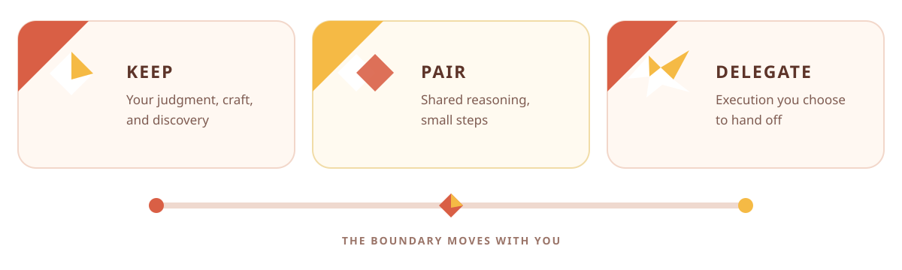

Ask when it helps
For substantial, ambiguous work, Joy asks what should remain yours. Clear or trivial tasks keep moving.
An Agent Skill for thoughtful delegation
Joy helps you decide what to delegate without giving away the parts of programming you value. It asks a focused question before an AI agent takes over.
AI can remove friction.
Joy keeps it from removing your part before you choose.
A movable boundary
Meaningful challenge and incidental toil are not the same thing. Joy lets you keep the design, discovery, or craft you want—and hand off the rest without guilt.

For substantial, ambiguous work, Joy asks what should remain yours. Clear or trivial tasks keep moving.
Learning, craftsmanship, exploration, and fast delivery are equally valid goals. Delegating everything is valid too.
Your latest instruction wins. Move work between Keep, Pair, and Delegate without ceremony or pressure.
Choose the session you need
Be explicit, or let Joy infer the lightest useful boundary from your request.
pairdefaultFocused, understandable increments with consequential choices discussed before implementation.
learnQuestions, explanations, and graduated hints while the central solution stays yours.
craftYou own architecture and interesting implementation; the agent handles support work.
shipSafe autonomous execution, a small complete change, validation, and a concise handoff.
tidyEvidence-based Keep, Refine, and Let go recommendations before destructive cleanup.
offReturn to normal assistant behavior without carrying a previous Joy boundary forward.
See the boundary move
Watch real CLI sessions. Pause, seek, change the pace, or select terminal text while Joy protects a different kind of ownership.
A small skill, no runtime
The canonical skill is plain Markdown, follows the Agent Skills standard, and has no runtime dependencies.
npx skills add JGalego/Joy --skill joy --agent claude-code --global --yesThe choice stays yours